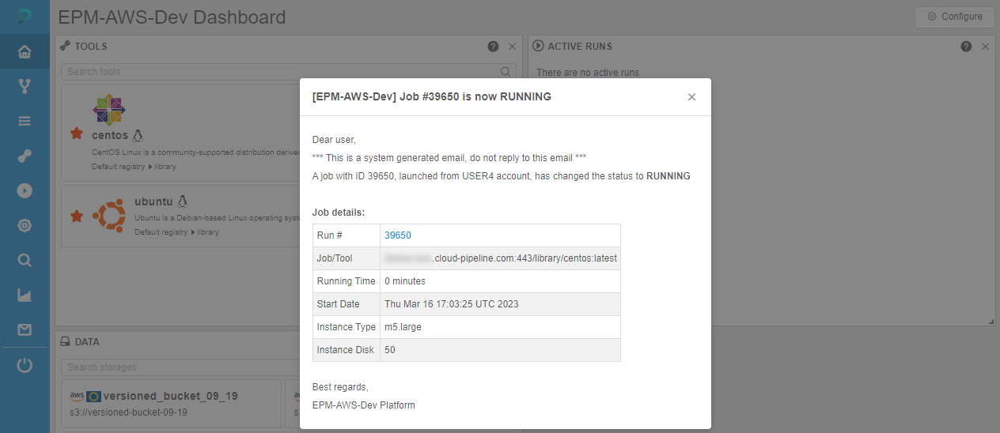

12.9. Email notifications
User shall have ROLE_ADMIN to manage Email notifications.
- Change the email notification
- Configure automatic email notifications on users' runs
- Push notifications
Change the email notification
- Navigate to the Settings tab.
- Select the Email notifications section.
- Choose any of the email notification types (e.g. LONG_INIT) on the left:
- Remove Keep admins informed and Keep owners informed options. This email notification type will no longer inform admins and owners.

- Add a new user to the Informed users. While typing system will suggest you users. When you selected all users, click outside this field.

- Change the Threshold parameter to e.g. 1400.

- Press the Save button to save all changes to the LONG_INIT email notification template.

Configure automatic email notifications on users' runs
Here, the mechanism of automatic email notifications for IDLE and HIGH-CONSUMED runs will be described.
IDLE runs
The system behavior for the IDLE runs is defined by the set of the following parameters:
| Setting | Preference-duplicate | Description |
|---|---|---|
| Max duration of idle (min) | system.max.idle.timeout.minutes |
Specifies the duration in minutes after that the system should check node's activity. If after this duration node's CPU utilization will be below CPU idle threshold - email notification IDLE_RUN will be sent to the user and the run itself will be marked by  label label |
| Action delay (min) | system.idle.action.timeout.minutes |
Specifies the duration in minutes. If node's CPU utilization is still below CPU idle threshold for this duration after the Max duration of idle is over - an action, specified in Action field will be performed |
| CPU idle threshold (%) | system.idle.cpu.threshold |
Specifies percentage of the node's CPU utilization, below which an Action shall be taken |
| Action | system.idle.action |
Sets which action to perform with the node, that has the CPU utilization below than CPU idle threshold:
|
| Resend delay (sec) Only for IDLE_RUN notification |
Specifies the duration in seconds. Defines a delay after which the IDLE_RUN notification will be sent repeatedly in case when node's CPU utilization is still below CPU idle threshold. IDLE_RUN notifications will be repeated until Action delay is over. Then Action will be performed.Note: if Action is set as NOTIFY - sending notifications will be continued every Resend delay. Default value: -1. In that case, IDLE_RUN notifications will not be resending. |
|
system.resource.monitoring.period |
Specifies period (in milliseconds) between the scannings of running instances to collect the monitoring metrics. After each such period, it's defined to display label for the specific instance or not |
Described parameters are configured in "common" panel for all IDLE notifications - IDLE_RUN, IDLE_RUN_PAUSED, IDLE_RUN_STOP, e.g.:

Saving of the changes in described parameters values at the EMAIL NOTIFICATIONS form automatically changes the corresponding values in PREFERENCES, and vice versa.
Notifications for long paused runs
There are two notification types for the runs that are in the PAUSED state for a long time:
LONG_PAUSED - this notification will be sent if the run has been paused for a long time.
LONG_PAUSED_STOPPED - this notification will be sent if the run has been paused for a long time and should be terminated.
The system behavior for the "long paused" runs is defined by the set of the following parameters:
| Setting | Preference-duplicate | Description |
|---|---|---|
| Action Common setting for both notification types |
system.long.paused.action |
Sets which action to perform with the node, that has been paused for a long time:
|
| Threshold (sec) Separately sets for each notification type |
Specifies the duration in seconds. Defines the delay after which an action, specified in Action field, will be performed and the corresponding notification will be sent if the run is still paused. | |
| Resend delay (sec) Only for LONG_PAUSED notification type |
Specifies the duration in seconds. Defines a delay after which the LONG_PAUSED notification will be sent repeatedly in case when the run is still paused after a Threshold duration.Note: if Action is set as NOTIFY - sending notifications will be continued every Resend delay. Default value: -1. In that case, LONG_PAUSED notifications will not be resending. |
Saving of the changes in described parameter value (for Action) at the EMAIL NOTIFICATIONS form automatically changes the corresponding value in PREFERENCES, and vice versa.
For example, LONG_PAUSED notification settings:

Example of the scenario for automatic notifications for "idle" runs
In general, the system behavior is the following:
- User launches a run
- After Max duration of idle (
system.max.idle.timeout.minutes) period, the system starts to check the node's activity. Then, the state of the node is checked everysystem.resource.monitoring.period - If the node's CPU utilization becomes below the CPU idle threshold (
system.idle.cpu.threshold):- email notification
IDLE_RUNis being sent, the run itself is being marked by the label
- email notification
IDLE_RUNnotification is being repeated every Resend delay (configured forIDLE_RUN) until the Action delay (system.idle.action.timeout.minutes) period is over.- After Action delay (
system.idle.action.timeout.minutes), if the node's CPU utilization is still below CPU idle threshold (system.idle.cpu.threshold):- email notification
IDLE_RUNis being sent (in case when Action (system.idle.action) is set as NOTIFY) - run is being paused/stopped and the corresponding email notification
IDLE_RUN_PAUSEDorIDLE_RUN_STOPPEDis being sent (in case when Action (system.idle.action) is set as PAUSE / PAUSE_OR_STOP / STOP)
- email notification
- In case when Action (
system.idle.action) is set as NOTIFY, email notificationsIDLE_RUNcontinue to be sent every Resend delay, if the node's CPU utilization remains below the CPU idle threshold (system.idle.cpu.threshold). - In case when run has been paused:
- if the Action (for Long Paused notifications -
system.long.paused.action) is set as NOTIFY, and the run has been paused for a Threshold period (configured forLONG_PAUSED), the notificationLONG_PAUSEDis being sent.- and if Resend delay (for
LONG_PAUSED) is configured, then email notificationsLONG_PAUSEDcontinue to be sent every Resend delay, if the run is still paused
- and if Resend delay (for
- if the Action (for Long Paused notifications -
system.long.paused.action) is set as STOP, and the run has been paused for a Threshold period (configured forLONG_PAUSED_STOPPED), run is being stopped (terminated) and the corresponding email notificationLONG_PAUSED_STOPPEDis being sent.
- if the Action (for Long Paused notifications -
Note: users can manually disable the automatic pausing of on-demand instances if they aren't used. For that the "Auto pause" checkbox at the Launch page shall be unchecked before the run:
This action cancels only the auto pause, but the RUN_IDLE email notifications will be being sent (if the corresponding conditions will be met).
HIGH-CONSUMED runs
All settings that configure actions/notifications for "high-consumed" runs are moved to the EMAIL NOTIFICATIONS section. These settings duplicate some System Preferences and also can be configured from the PREFERENCES section, but it is more comfortable to configure them from the NOTIFICATIONS.
HIGH_CONSUMED_RESOURCES notification settings:
The system behavior for the "high-consumed" runs is defined by the set of the following System-level parameters (Preferences):
| Setting | Preference name | Description |
|---|---|---|
| Threshold of disk consumption (%) | system.disk.consume.threshold |
Specifies the node's disk threshold (in %) above which the email notification HIGH_CONSUMED_RESOURCES will be sent and the corresponding run will be marked by  label label |
| Threshold of memory consumption (%) | system.memory.consume.threshold |
Specifies the node's memory threshold (in %) above which the email notification HIGH_CONSUMED_RESOURCES will be sent and the corresponding run will be marked by the label |
system.monitoring.time.range |
Specifies the threshold timeout (if a real average resource consumption is higher then any of the thresholds above for that timeout - a notification shall be sent). Also defines the period after which the notification will be sent again, if the problem is still in place |
So, when memory or disk consuming will be higher than a threshold value for a specified period of time (in average) - a notification will be sent (and resent after a delay, if the problem is still in place).
Saving of the changes in described parameters values at the EMAIL NOTIFICATIONS form automatically changes the corresponding values in PREFERENCES, and vice versa.
Push notifications
All email notifications, that are sending by Cloud Pipeline platform, are also duplicated as push notifications. This allows to view notifications right in the platform GUI.
Push notifications do not require additional configuring - they are fully the same as corresponding email notifications, i.e. have the same header, content, recipients list, frequency and trigger of sending, etc.
Therefore, administrator shall only configure email notifications once - platform will automatically duplicate emails sending as push notifications on the GUI.
View push notifications
Once any system event is occurred and its trigger for sending email notification has fired, email will be sent to the configured recipients (according to the notification template settings).
Simultaneously, the push notification (with the same subject and body as in the email) will be "sent" to the same recipients.
If these recipients are working in the Cloud Pipeline GUI at that moment or when they will open the platform GUI next time, they will view the corresponding push notification - in the right-upper corner, over any layout Cloud Pipeline page, e.g.:
At the same moment, near the Notifications icon in the main menu will appear a count of new unread messages:
To view details and full notification body, click the notification tile. Notification will be opened in a pop-up:

Once that pop-up is closed, the notification will be marked as "read", the counter near the Notifications icon in the main menu will decrease.
If you close the push notification by click the cross-button on it, such notification also will be marked as "read":
If there are several push notifications were received, a couple of them will be shown with short details and the rest will be collapsed into a tile, e.g.:
Such collapsed tile contains:
- a label with a count of collapsed notifications
- button hide - to hide all appeared push notifications but left them "unread"
- button read all - to hide all appeared push notifications and mark them as "read"
Notifications section
Notifications section allows to view all push notifications/emails sent to the current user.
To open the section, click the corresponding button in the main menu:

This page allows to view notifications. By default, new "unread" notifications list will be shown (as on the picture above).
To view "read" notifications list, select the corresponding item in the dropdown list near the page title:
"Read" notifications list will appear:
Notifications list has the following fields:
- Status - status of the notification ("unread" or "read", distinct by the icon color)
- Title - notification title - it corresponds to the original email subject
- Text - first row of the notification text - it corresponds to the beginning of the original email body
- Created date - date and time of the notification push
- Read date - date and time when the notification is read
Additionally, the page contains controls:
- Read all button - to mark all new "unread" notifications as "read"
- Refresh button - to refresh notifications lists and update a counter of "unread" notifications
To view the notification - click it in the list, e.g.:

Notification will be opened in a pop-up:
If the notification was new and "unread" - once that pop-up is closed, the notification will be marked as "read" and will be placed to the corresponding notifications list.
Settings
Mute notifications
If user do not want to receive push notifications over all forms and pages in the platform GUI - they can be "muted".
For that, user shall:
- Open System settings
- Select the tab My profile
- In the Profile sub-tab, tick the checkbox "Mute email notifications":
After, new notifications will be appearing only in the Notifications section, but corresponding pushs will not be showing.
Storing period
Admins can configure the period for which described GUI notifications will be stored.
It can be done via the system preference system.notifications.exp.period.
This preference set the duration of the period in days after which old received notifications will be removed.
The default value is not set (blank). This means that notifications are not being removed at all.